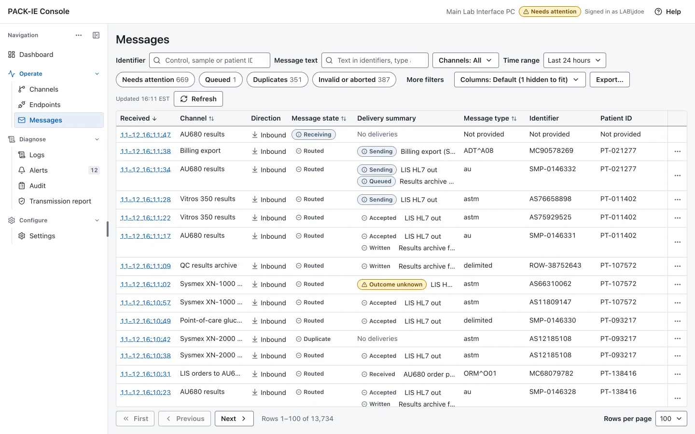
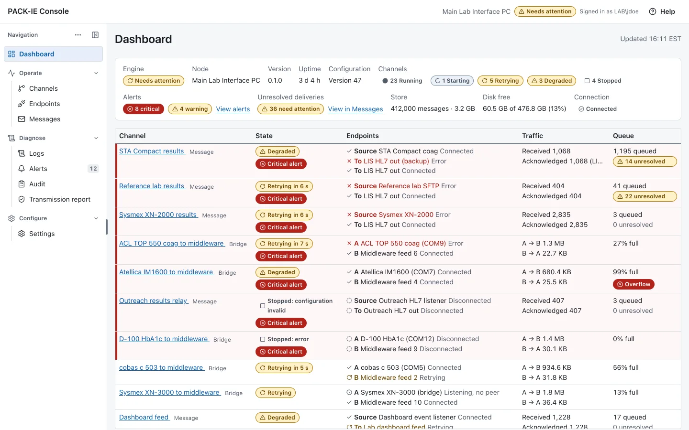
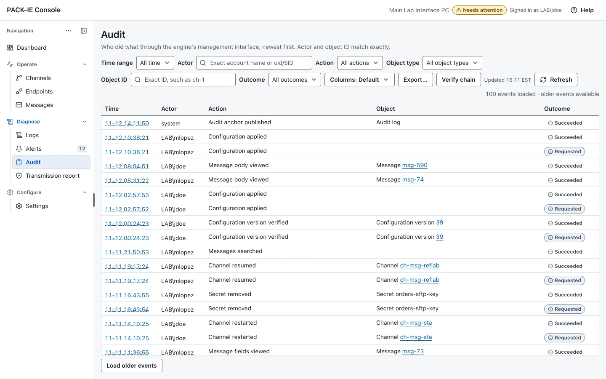

Open source · AGPL-3.0-only · In development
Instruments. HL7. Files.
One lab interface engine.
Positive ACK is a free, open-source interface engine for clinical laboratories. It connects analyzers, LIS/LIMS, EHRs and other applications, and keeps a durable record of every message it handles, on a computer the lab owns.
- Runs on one computer
- No cloud service required
- Free to use and modify
Development on synthetic data. Version 0.2.0 is built and tested. No release has been published, installers are unsigned and the software is not clinically validated.
See every message,
and what became of it.
The engine runs as an operating-system service. A desktop console attaches to it on the same computer to watch channels, search messages, read logs and change configuration.



Screens show demo data. Instrument names in them are example channel labels, not a list of instruments the software has been qualified on.
Connect what the lab already has.
A channel pairs a source with one or more destinations, with optional filters and mappings, configured without writing code.
- Instrument interfaces
- Receive results from analyzers and send orders to them over ASTM E1381/E1394 (CLSI LIS01-A2/LIS02-A2) and the AU400/AU640 fixed-width protocol, on serial ports or TCP.
- HL7 v2 interfaces
- Exchange orders and results with LIS, LIMS, EHR and practice systems over MLLP, as client or listener. Each message keeps its acknowledgement history.
- File interfaces
- Read and write delimited files from templates, in watched folders or over SFTP, for instruments and applications that only speak files.
- Bridge channels
- Pass a live byte stream between two endpoints (serial, virtual serial, TCP) with bounded buffers, reconnection and a traffic transcript, when the two sides already speak the same protocol.
- Filters and mappings
- Map fields, translate codes, calculate with exact decimals and route to several destinations. Presets cover common instrument layouts; every configuration version is kept for review.
- Service and command line
- One engine installed as a Windows service, launchd daemon or systemd unit. The same binary is the command-line client for status, messages, logs, configuration, audit and backup.
A receipt for
every message.
An interface is only as trustworthy as its record. Positive ACK commits a message to its store before it acknowledges the sender, and reports failures as failures.
- Durable by default
- Every message received and sent is stored with its acknowledgements, retries and outcome. A transport acknowledgement is never mistaken for successful processing.
- Explicit failures
- Rejected, timed out and unknown outcomes are shown as such. Duplicates are detected; a message can be resent or closed with a reason.
- Records a laboratory needs
- Operator attribution from the operating-system account, a hash-chained audit log, configuration change control with sign-off, backup and restore, and transmission reports.
- Local by design
- Runs on one laboratory computer on Windows, macOS or Linux, inside the lab network. No server to run, no subscription, no cloud dependency.
Built and tested.
Clear about what remains.
The repository’s status page records what is verified on each platform and what is still open.
| Now | Remaining |
|---|---|
| Source published under AGPL-3.0-only, with operator guides, specifications and a developer guide | A first release: signed installers that carry the license and third-party notices |
| Automated tests, simulator scenarios, fuzzing and multi-hour endurance runs without a lost or duplicated message | Installed-service checks on Windows; x86-64 Linux and physical serial hardware |
| Presets for common instrument layouts, built from published interface documentation and synthetic tests | Qualification on real instruments, which each laboratory performs before clinical use |
License
Licensed under GNU Affero GPL version 3 only (AGPL-3.0-only). Commercial use and redistribution are permitted. Distributors must preserve the required notices, license covered works under AGPLv3, and provide corresponding source as the license requires, including to users of a modified version offered over a network. Third-party material retains its own terms.
Copyright © 2026 BGASoft Inc. and OpenBGA contributors. OpenBGA and the OpenBGA product names and logos are trademarks of BGASoft Inc. The license does not grant permission to use them (AGPL-3.0 section 7(e)), except as needed to describe the origin of the software.
Development disclaimer
This project is vibe coded: developed with substantial AI assistance. Reasonable effort goes into research, planning, analysis, review and testing. That effort does not guarantee correctness, security, regulatory compliance or fitness for clinical use. Built and tested on synthetic data; not clinically validated.
Provided as is, with AGPLv3’s warranty exclusions and liability limitations, subject to applicable law and written agreements. This notice does not change the license.
Project and support
Positive ACK is an open-source project of BGASoft, a laboratory software company, and part of OpenBGA.
Community use. The software is free under the AGPL-3.0-only license and is provided as is. The project does not include a support commitment: issues and pull requests are welcome and are answered on a best-effort basis.
Are you looking for support? Contact bgasoft.com.
Build it, run it on synthetic data, tell us what breaks.